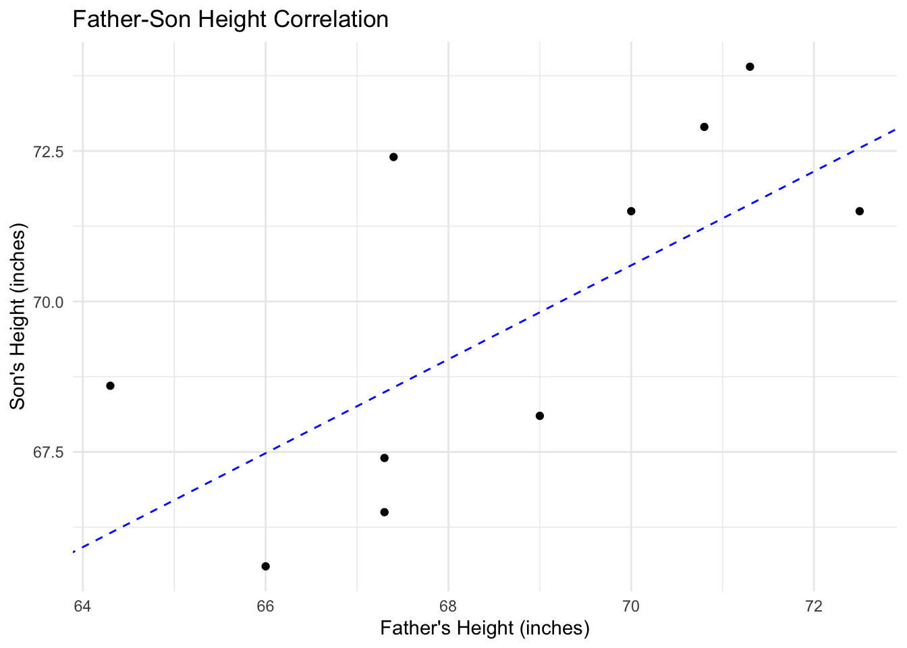

show code for this result

This chapter is primarily about Karl Pearson; in the early 20th century, he was a professor at University College London (UCL), which has an archive of his papers available online. Documents in this archive largely serve as the factual basis for assertions about Pearson’s beliefs. I mostly limited myself to his writings and work, as collected in this archive as a factual basis for this chapter.
Preliminary, I should justify the near exclusive focus on Karl Pearson. Pearson was born in England in 1857 (as Carl, no less), and changed his name to Karl while studying in Germany. His focus was on statistics, and his mentors and idols in this pursuit were Francis Galton and Raphael Weldon. These three men would become collaborators, founding the journal Biometrika and popularizing biometrics (and eugenics). Pearson was so enamored with Galton that he renamed his office (the Eugenic Records Office) at UCL to the “Galton Laboratory for National Eugenics,” giving Pearson the title of “Galton Professor of Eugenics” after Galton’s death. After Pearson’s retirement, he was replaced by Ronald Fisher. All of these men (and many others) deserve their portion of credit and balme for the development of statistics and eugenics, and for the consequences of these sciences being put into brutal practice.
Nevertheless, I focus on one man: Karl Pearson. Why? I wanted to present an early example of the eugenic statistician, and in the early 20th century Pearson seems to most closely fit this bill. I wanted to demonstrate that genetics represented not only a complete, consistent, and totalizing ideology, but also a distinct way of considering and administering life, steeped in ideas that Pearson understood would be unpopular (and, according to his contemporaries, probably immoral or outrageous; see the following quote about children from pages 37 and 38 of Pearson (1909)).
“The child as commodity whose supply is regulated by economic value may sound a harsh doctrine. But truth–whether of natural selection or of social evolution–is not created by man; he has only to discover it, be palatable or bitter. Social stability depends upon the extent to which we allow even unpalatable truth to guide our legislation and our conduct. Eugenists have before them at present alternative paths, they can follow the easy course of appeal to popular feeling and untutored human emotion, in which case they will create, like philanthropic effort, immediate interest, have their day and their fashions, and leave no progressive impress on racial evolution. Or, they can take the harder road of first ascertaining the laws which regulate the human herd, of creating a science which shall dictate an ultimate eugenic art. In the latter case they will scarcely be popular for I feel sure their truths will be bitter and our generation likes above all things its medicine and mild and toothsome form.”
Pearson’s conception of the world, which provided the exigence for eugenics, explained why eugenics must be unpopular, at least among the civilized upper classes. The fact of its unpopularity, its harshness, was not a bug but a feature of the ideology, which relied on applying a separate calculus to the working person then to the aristocrat.
For the aristocracy, “the child has never been an economic asset; it is a luxury which we know we must pay for, and expect to pay for, until after college and professional training, and, in the case of unmarried daughters, often long after our own lives are concluded” (Pearson (1909), p.21). Taking this into perspective, the bourgeoisie would naturally be reluctant to accept eugenics, instead adopting a position of moral indulgence (virtue signalling?). To this end, over the course of the late 19th century (starting in about the 1860’s), the English ruling class instituted a variety of progressive reforms concerning child and mother. Recognizing with horror the image of the child laborer (although not in their own children, of course), the elite passed a series of factory acts which placed onerous restrictions on child labor and the labor of pregnant women (e.g., by increasing the minimum working age above 8, by making it illegal to employ pregnant mothers or those who had very recently given birth).
Pearson endorsed a sort of bio-capitalistic determinism for the fertility of lower classes. They were not responsive to the same factors as the upper class. Working women made family planning decisions on a rational, economic basis (Pearson 1909). They made decisions about parenting as if their children were “pecuniary assets” that had to be cared for and raised for a certain period of time before the parent could begin to realize the (material) gains from their investment in the child. They may think of their children in other ways, as well, but their desperate poverty forces this perspective upon them. Restrictions on child labor reduced the economic utility of the child-as-commodity. Restrictions on pregnant labor reduced the economic utility of motherhood-as-commodity.
There was one proletariat group that was excluded even from the lower-class purely economic calculus, those being the deviants and degenerates who dropped their children in the hands of the state and thus did not consider the economic benefits or losses of child-rearing (read: welfare queens). He found that the pathological stocks had a mean family size of near 6.2, less than the mean of 5.5 for the “normal” stock (Pearson 1909). He consistently found “a positive correlation between an undesirable social feature and a negative correlation between a mark of a well-to-do population and the birthrate” (Pearson 1909).
The problem, as he saw it, was not one of needing to correct the course of evolution, but needing to reverse the artificial birthrates imposed by the structure of society, which encouraged aristocrats to have very few children (who they viewed as emotional instead of material investments), poor working folk to have fewer children (who the laws made less valuable as pecuniary assets), and degenerates to have so many children (who became burdens for public and private charity to handle). Every part of the population had to be regulated so as to optimize the positive (eugenic) effects of evolution while minimizing and avoiding the negative (dysgenic) ones.
Pearson believed that international conflict was more-or-less inevitable. The fittest and best nation will win (and their fitness-demonstrated by their winning-would justify colonization, which would enable the empire to grow and access more or different resources that would increase national fitness if only the nation was able to wield them effectively). He conceived of the nation as a whole in biological terms. It could be strong and fit, but it could also degenerate and, presumably, die (or worse, lose), it could take steps to improve itself (enabling a practice analogous to medicine, but at a national scale).
The fitness of the nation-state had to be addressed with the same urgency with which we address our physical health. But this is something of an unhelpful dichotomy because Pearson also believed that the improvement of the nation relied on the improvement and good organization of individual bodies, which in practice often results in a focus on individual health (see literally all of public health and Pearson’s lecture to gathered public health practitioners and experts).
We are forced, then, to make the conclusion that the Darwinian theory in the case of mankind is law and not a “plausible hypothesis”
Pearson (1919)
Pearson’s cited as evidence for his beliefs Darwinian evolution and correlational statistics, which he largely pioneered. From the perspective of current science, he drastically misunderstood and misapplied both sciences. His largest misunderstanding of evolution was its speed, believing it to operate on far shorter timescales than we understand today. A lot of his discussion of how quick evolution works (like his claim about factory legislation that “The biological and economic bases of life are disregarded, and the result is only manifest some twenty or thirty years later”) are conceived as sped up by capitalist forces (Pearson 1909). He did, however, believe that if a group of people only had children with each other and they all participated in a certain craft, and this situation persisted for several generations, eventually the children of that group would be biologically more fit (at birth) than average for that particular craft. By the standards of biology today, the notion that evolutionary advantage could be conferred in less than a thousand years is absurd. His estimates of how heritable essentially all traits are (frequently 50% or higher; Pearson (1919)). His largest statistical errors are the ol’ interpreting correlation as causation trick and the failure to recognize that the way he formed people into groups was arbitrary and likely to bias his results (not least because of the names that he gave some groups, which communicated his disdain for them to his audience).
In any case, Pearson set forth a number of factors that he believed were needed for national success in this international struggle. First were the physical powers of a nation, measured by its fertility rate, its “health and sanitation, the vigour and absolute strength of individuals”, its material resources (and control over their access), and its power to seize and hold equipment (Pearson 1919). The mental factors in success are diverse, including not only factors beneficial to capitalist production (i.e., the power to “carry out mechanical work quickly and effectively”, endurance, and the willingness to “follow for years definite policies with only future profit in view”) but also those that served the nation, such as “morale and patriotism”, a tendency away from “epochs of national hysteria” (like the ones those damn French keep having), as well as the power to either effectively govern a segregated and hierarchecized society or to “ultimately assimilate diverse racial groups” (Pearson 1919). The factor that was, in the years to come, going to be most important was, however, intelligence, which was to be produced by technocrat scientists, passed down to every working member of society, and have its ideological ends pursued by aristocrat statesmen.
Brute force, strength and bravery, material wealth, have in turn been dominant in the state; to-morrow will be marked by the dominance of intelligence. The most intelligent nations will be victorious in the struggle; and it befits each state that would be great to-morrow as well as to-day to educate and organize itself, from the statesman at the top to the plough-boys and factory hands at the basis. In the future it will not be possible either to organize and lead a nation or to make cheese effectively without training–without a knowledge of what science has to say about men or milk.
Because of his understanding of biology (i.e., the ability to inherit an advantage at a specific craft after a small number of generations) and because of his ideology about the highest calling of nations (and science, for that matter), he advocates for a caste system maintained by expansive technologies of population control that could regulate, eliminate, or employ each and every body in society in pursuit of success in inevitable international conflict. These are the understandings and goals around which eugenics (and related ideologies like Nazism) revolve.
There are a few misconceptions about Pearson’s work that I would like to disabuse the reader of. Firstly, his support for the caste systems that existed during his life. Although the modern concept of “meritocracy” seems to read off of his work, he did not by any means believe that those currently in power were the best or most fit people for that position. As we have seen, he was vehemently opposed to the policies the elite were pursuing, and he repeatedly admonished them to set their elite moral standards aside by discriminating between the fit and the unfit in their provision of charity and rights. The way he speaks about the current ruling class has a distinctly populist flare, particularly in Pearson (1909) and in several letters to newspaper editors, which were intended for an audience consisting mostly of laypeople.
Next is the concept of race. Many of Pearson’s contemporaries understood the appearance of five-ish different races to be a result of either five different origins of the species or of thousands of years of separation that allowed the racial groups to become distinct. Pearson did not believe it was tenable that the species had five different origins, nor did he believe that the historical segregation of racial groups could account for the races, as there has always been a large amount of interaction between racial groups, allowing the supposed bloodlines to interact (via the conception of interracial children). Instead, Pearson frequently employed the term “race” to describe the castes in society, which were most naturally suited to the type of work their ancestors performed. That is not to say that the correlational methods he developed were not essential components of scientific racism (e.g., determining that blackness is negatively correlated with intelligence), but Pearson himself did not appear to pursue this sort of argument, at least not in the work that I have read. He tends to focus on the inheritance of traits (like bad eyesight, criminality, or susceptibility to tuberculosis), not the inheritance of race or racial traits, as we understand them today.
This has been a very short telling of how Karl Pearson (and his contemporaries) were able to turn a statistical method (correlation) into a plan to colonize, optimize, and dominate biology through the unadulterated expression of national power on individual bodies. The most persistent effect of this has been the valorization and reification of the norm. Karl Pearson did not invent this concept, and he was living through a time in which deviations, dysfunctions, and hysterias were increasingly being identified, theoretically elaborated, medically treated, legally defined, and juridically punished. However, he was significantly involved in the statistical specification of what is normal, creating a quantifiable and formal method to make this determination, thus lending the “aesthetics of statistics” to the sociopolitical forces that were already operating.
The policies Karl Pearson advocated for in the work that I have read are not what typically comes to mind when I think of “eugenics.” Pearson died in 1936, three years after Hitler gained control of Germany and began his campaign of extermination, which he supported with very similar arguments about conquering and optimizing the population at a biological level. This is the purest eugenic form I can (or would like to) imagine, followed by the expansive sterilization campaigns of the 20th century. Both of these campaigns of human destruction refer to the same ideas and understandings as Karl Pearson, and it is not difficult to see how his ideas about degeneracy could justify and excuse, or even support, these heinous actions.
In the words of one of my psychology professors, these are examples of “negative eugenics” which seeks primarily to minimize and avoid the biological risks of having inferior (degenerate, feeble, insane, pathological, implicitly foreign) elements in your population. In contrast to Hitler, Pearson devoted more attention towards “positive eugenics,” which seeks primarily to develop the positive attributes of the population while organizing those attributes (and the bodies to which they are attached) in the most efficient, profitable way possible. “Negative eugenics” indicate uncompromising control of the unfit body, exercised with a level of brutality paralleling the treatment of swine on an industrial farm. Pearson’s “positive eugenics” indicated more subtle and less brutal but potentially more all-encompassing technologies to achieve the control of bodies.
We must base national education on the need for national reaction against a changing environment; we must consciously prepare for the struggle, and by an intelligent study of human evolution arouse the patriotism and race pride of the young to assist directly in developing their intelligence for national ends.
Pearson (1919)
As with many who want to exercise a subtle but totalizing control over a population, Pearson was very interested in the education system, which he believed was a national liability. This is the primary focus of Pearson (1919), which is titled “The Function of Science in the Modern State”. In that work, he takes a pragmatic approach to the castes. Because casted workers are fit for specific work, the caste system makes an efficient (if not an entirely optimal) basis for assigning bodies to specific forms of capitalist production, but Pearson emphasizes allowing some social mobility so the particularly talented proletariat (exemplified by Michael Faraday) could be lifted into an intellectual elite while the under-performing elites were dragged down to a life more suited to their inferior abilities. The mechanism by which workers are assigned to an occupation is education. After a relatively universal primary education, future workers would matriculate through secondary institutions that would hyper-specify on the skills and scientific expertise they need for their future careers.
Pearson believed that “local bodies are no in the intellectual position to draft an efficient educational system; nor, if they could do so, are they able to put it into practice economically, or to avoid the friction of local sectarian feeling” (Pearson 1919). Instead, the state needed to structure, administer, and surveil the system. Primary schools should serve four primary functions, two of which benefit the child and two of which benefit the state. For the child, the state provides an opportunity for the acquisition of motor skills needed for craftsmanship and for the acquisition of scientific method according to which society is hopefully structured. The acquisition of facts is secondary to the acquisition of method. For the state, the child provides an opportunity for it to surveil the population through the extensive collection of data (enabled and made meaningful by national standardization), as well as the ability to inculcate the child with naturalized patriotism, thereby setting them up to reproduce the social and national order of things during adulthood. The collection of data is important for the formation of two types of knowledge: knowledge about the population (whether each successive generation is statistically superior to the last) and knowledge about the individual (whether their ability indicates that they should be moved up or down in the social hierarchy, and which type of work they are most suited for). Patriotic education involved the inculcation of social duties (e.g., “to emphasize the need for developing the physique, the intelligence, and the spirit of co-operative action as essentials of true patriotism”) aimed at forcing the child to perceive their highest purpose as self-development for the benefit of the nation. The children should engage in athletic activity, even though it distracts from the acquisition of intelligence, because it is positively correlated with a number of positive social and physical outcomes.
The biggest problem with secondary education was the lack of specialization and the waste created by having overlapping institutions. In the fashion of a biologist, Pearson wanted all of the institutions of secondary education to have a concentrated variety of established functions (e.g., training textile workers) and to be structured according to that function.
The data used in this example were collected during the commission of this study: Pearson and Lee (1903). In the course of his work, Pearson was interested in collecting what he called anthropometric measurements of the population for a variety of purposes. To establish the heritability of physical characteristics (and to pit his own theory against Mendelian genetics), he collected family data. The data we will work with are 1078 measurements of a father and his adult son’s height. The small_data is a random sample of the data (\(n=10\)) for illustrative purposes.
The first step with any of this is to see it on a scatter plot. From the scatterplot, we see a visual correlation between the heights of father and son. Relatively taller fathers appear to have relatively taller sons.
The idea of regression is to find the straight line that best represents this correlation that we see in the data. The line is defined by two parameters: the slope and the intercept. Completely random, but let’s guess and say the slope is 0.78 and the intercept is 16. We can plot this line on the scatter plot to see how well it fits. The intuition I was encouraged to develop here is that there should be an equal number of points above and below the line, which is-in fact-the case.

How good is this line? Middle school algebra says perfect, but if you had to put a number on the goodness of the fit of this line to this data, how would you do that? Here is an idea. The goodness of the line depends on how close all the points are to it; let’s call this distance the deviation of a point from the line.
To compute the deviation from the line, we subtract the predicted value of \(y\) from the actual value of \(y\). In this case, let’s predict the son’s height from the father’s height using the line we just drew. The predicted value of \(y\) is given by the equation of the line: \(y = mx + b\), where \(m = 0.78\) and \(b = 16\).
[1] 64.36Now we can use our height predicting function to compute the predicted height of each father’s son based on the father’s height. With the prediction and the actual observation, we can compute the deviation of each point from the line.
To bring us back to the plot, we can add error lines to the scatter plot to show the deviation of each point from the line. The red lines show the deviation of each point from the line. The length of the line is the deviation of the son’s height from the predicted height.
It is important to note that this is only one way to think of a deviation. We have drawn our deviation lines vertically, but we could have drawn them horizontally by predicting the fathers height from the sons.
predict_father_height <- function(son) {
(son - 16) / 0.78
}
small_data <- small_data |>
mutate(pred_father = predict_father_height(son)) |>
mutate(horiz_dev = father - pred_father)
scatter_plot +
geom_segment(data = small_data, aes(x = pred_father,
y = son,
xend = father,
yend = son),
color = "red",
alpha = 0.5)If we wanted to be really pretentious, we could use orthogonal deviations that are perpendicular to our line of best fit.
# linear algebra brings us these numbers
# I had to solve a system of two equations to get them
# -0.78 * x + y = 16
# (1/0.78) * x + y = b
small_data <- small_data |>
mutate(b = son + (100/78) * father,
xend = -7.76 + 0.485 * b,
yend = 9.952 + 0.378 * b)
scatter_plot +
geom_segment(data = small_data, aes(x = father,
y = son,
xend = xend,
yend = yend),
color = "red",
alpha = 0.5)Each of these methods (exemplified by the little red lines) is a different and perfectly valid way to compute the deviation of a point from this line. There are also other valid ways to do so that I have not covered here (e.g., Manhattan or city-block distance). I used each of these three methods (vertical, horizontal, and orthoganal, which is more complicated) to compute the deviation of each point from the line and stored them in deviations.
deviations <- small_data |>
mutate(
delta_x = father - xend,
delta_y = son - yend,
orthog_dev = case_when(
delta_x > 0 & delta_y < 0 ~ -sqrt(delta_x^2 + delta_y^2),
delta_x < 0 & delta_y > 0 ~ sqrt(delta_x^2 + delta_y^2)
)
) |>
# round all deviations to 2 decimal places
mutate_at(vars(contains("dev")), ~round(., 2)) |>
select(father, son, vert_dev, horiz_dev, orthog_dev)
deviationsHow are we going to use these deviations to measure the goodness of the line? Shall we try to sum them up?
It is very uncommon to sum up deviations. Because deviations can be negative or positive, they can cancel each other out. Theoretically, the sum of deviations from a line of best fit should always be zero (although, as you can see from the table above, it is not always the case that they sum to exactly 0). Typically, statisticians will square the deviations before adding them to avoid exactly this problem. The resultant sum of squared deviations is called the residual sum of squares (RSS; residual because they are deviations from the “model” which is the line of best fit).
The problem of fitting a line of best fit shakes out as follows. We will define an error function that measures the goodness of fit of a line. This error function will be the sum of squared deviations from the line, using whichever definition of deviation we prefer (conventionally, vertical deviation is used).
The framing of error in this way also allows us to think of this problem as an optimization problem. A residual sum of squares of 0 will indicate a perfect fit (our goal), and higher values indicate progressively worse fit. Framing this as an optimization problem allows us to use the tools of calculus together with those of linear algebra to find the line that minimizes the error function.
We will define a line of best fit as the line that results in the smallest possible value of the error function. When we use the sum of squared deviations as an error function, this line is called the least squares regression line. We have to define the line in these terms because in linear algebra jargon we are dealing with a system of equations that is over-determined. We have more data points than there are variables, and there is no straight line that will pass through all of them.
The mathematical problem of least squares has existed for a long time, and was solved by two men in the early 19th century. The first to solve it was Gauss, but the first to publish the solution was Adrien-Marie Legendre (in 1805). The invention of linear regression is often attributed to Francis Galton, however, because it was he who coined the term “regression” and popularized the method.
The least squares method models the independent variable \(y\) as a linear function of the dependent variable \(x\) with an additional error term, commonly denoted by either \(e\) or the greek letter epsilon \(\epsilon\). The error term is the difference between the observed value of the dependent variable and the value predicted by the model. The model can be written as follows (where x is father’s height and y is that of the son):
\[y = \beta_0 + \beta_1 x + \epsilon\]
\(\beta_0\) in this equation is the intercept (known as just \(b\) in high school algebra), and \(\beta_1\) is the coefficient of \(x\) (known as \(m\) in high school algebra). The goal of the method is to find a value of \(\beta_0\) and \(\beta_1\) that minimizes the sum of squared errors.
To compute the value of these coefficients, you can use the lm function to perform least squares regression.
Call:
lm(formula = son ~ father, data = small_data)
Residuals:
Min 1Q Median 3Q Max
-2.330 -1.903 -0.422 1.787 3.491
Coefficients:
Estimate Std. Error t value Pr(>|t|)
(Intercept) 16.1539 20.1612 0.801 0.4461
father 0.7827 0.2938 2.665 0.0286 *
---
Signif. codes: 0 '***' 0.001 '**' 0.01 '*' 0.05 '.' 0.1 ' ' 1
Residual standard error: 2.266 on 8 degrees of freedom
Multiple R-squared: 0.4702, Adjusted R-squared: 0.404
F-statistic: 7.1 on 1 and 8 DF, p-value: 0.0286I often find it helpful to “tidy” this output using the broom package, primarily so that I can see the confidence intervals for the coefficients, which are far easier to interpret than the p-values (which Pearson would have relied on).
The estimate refers to the coefficient (one of the \(\beta\) from the model equation), and the std.error is the standard error of the coefficient estimate. Using this information, the a t-statistic is calculated (statistic) from which the p.value is derived. The conf.low and conf.high values are the lower and upper bounds of the 95% confidence interval for the coefficient.
The t-test operates on the null hypothesis that the coefficient is equal to 0. Null hypothesis significance testing requires that we set a threshold for the type-1 error rate (the rate at which we will falsely reject the null hypothesis). Typically, social scientists use a maximum type-1 error rate of 0.05. They reject the null hypothesis and declare that the coefficient is significantly different from 0 if the p-value is less than 0.05, as it is in this case. The p-value is difficult to interpret and does not provide any information about the size or practical significance of the effect.
The conf.level argument is not involved in the t-test, but it is involved in the computation of the confidence interval. If you increase the conf.level, you will make the confidence interval wider, and if you decrease it, you will make the interval narrower. The confidence interval is easier to interpret than the p-value, but its interpretation is still a little odd. If we repeated the same experiment many times (enough times to allow asymptotic theories like the CLT to kick in), we would expect the true value of the coefficient to fall within the confidence interval 95% of the time. This is a little different from saying that we are 95% confident that the true value of the coefficient falls within the interval. The latter interpretation is a little more intuitive, but it is significantly less correct.
The following plot might aid in understanding the confidence interval. Performing a linear regression for all of our data results in a coefficient estimate of 0.51. If we take 40 bootstrap samples (i.e., drawing a sample from the data with replacement 40 times) and construct a confidence interval for each, we should find that the true value of the coefficient (let’s just assume 0.51, but really we don’t know) will fall outside of the confidence interval about 2 times.
(Intercept) father
33.8928005 0.5140059 The coefficient of the simple linear regression model should be interpreted as a slope. For every one unit increase in the father’s height, there is a 0.51 unit increase in the son’s height on average. Also of interest is how much of the variance the model is able to explain. This is given by the \(R^2\) value, which is 0.25 in this case. This means that 25% of the variability in the son’s height can be explained by the father’s height. \(R^2\) is sometimes called the coefficient of determination, and it ranges from 0 to 1. Higher \(R^2\) values indicate that the model is better at explaining the variability in the dependent variable. You can get the \(R^2\) from through the summary function, the glance function (of the broom package), or by calculating it yourself. When the data is moved closer to the regression line, \(R^2\) will increase; when data is farther away from the line, \(R^2\) will decrease.
[1] 0.251164[1] 0.251164Linear regression and correlation are only appropriate when the relationship between the two variables is linear. If the relationship is not linear, the correlation coefficient will not accurately reflect the strength of the relationship and will generally be meaningless. In the following data, I find a weak negative effect of x on y, and a linear regression shows that the coefficient is not significantly different from 0.
[1] -0.06447185This is completely meaningless, however. If I performed this regression and interpreted it as “a one unit increase in x leads to a 0.1 unit decrease in y, on average” I would be lying (i.e., making a factual claim without evidence). The data is not linear, as you can see if you plot it. You must always plot your data before performing a correlation or regression analysis.
This is a review of the effects of social power, as they manifested themselves through statistics in the early 20th century. I will focus to some extent on the work of Karl Pearson, for whom the Pearson’s \(r\) correlation coefficient is named. In this analysis (mostly of primary sources, many from the man himself), I rely to large extent on the notion of bio-power, as expressed by Michael Foucault in the following quote
In concrete terms, starting in the seventeenth century, this power over life evolved in two basic forms; these forms were not antithetical, however; they constituted rather two poles of development linked together by a whole intermediary cluster of relations. One of these poles–the first to be formed, it seems–centered on the body as a machine: its disciplining, the optimization of its capabilities, the extortion of its forces, the parallel increase of its usefulness and its docility, its integration into systems of efficient and economic controls, all this was ensured by the procedures of power that characterized the disciplines: and anatomo-politics of the human body. The second, formed somewhat later, focused on the species body, the body imbued with the mechanics of life and serving as the basis of the biological processes: propagation, births and morality, the level of health, life expectancy and longevity, with all the conditions that can cause these to vary. Their supervision was effected through an entire series of interventions and regulatory controls: a bio-politics of the population. The disciplines of the body and the regulations of the population constituted two poles around which the organization of power over life was deployed. The setting up, in the course of the classical age, of this great bipolar technology–anatomic and biological, individualizing and specifying, directed toward the performances of the body, with attention to the processes of life–characterized a power those highest function was perhaps no longer to kill, but to invest in life through and through.
Foucault (1978), p. 139
Another consequence of this development of bio-power was the growing importance assumed by the action of the norm, at the expense of the juridical system of the law. Law cannot help but be armed, and its arm, par excellence, is death; to those who transgress it, it replies, at least as a last resort, with that absolute menace. The law always refers to the sword. But a power whose task is to take charge of life needs continuous regulatory and corrective mechanisms. It is no longer a matter of bringing death into play in the field of sovereignty, but of distributing the living in the domain of value and utility. Such a power has to qualify, measure, appraise, and hierarchize, rather than display itself in its murderous splendor; it does not have to draw the line that separates the enemies of the sovereign from his obedient subjects; it effects distributions around the norm. I do not mean to say that the law fades into the background or that the institutions of justice tend to disappear, but rather that the judicial institution is increasingly incorporated into a continuum of apparatuses (medical, administrative, and so on) whose functions are for the most part regulatory. A normalizing society is the historical outcome of a technology of power centered on life.
Foucault (1978), p. 144
We, on the other hand, are in a society of “sex,” or rather a society “with a sexuality”: the mechanisms of power are addressed to the body, to life, to what causes it to proliferate, to what reinforces the species, its stamina, its ability to dominate, or its capacity for being used. Through the themes of health, progeny, race, the future of the species, the vitality of the social body, power spoke of the species, the vitality of the social body, power spoke of sexuality and to sexuality; the latter was not a mark or a symbol, it was an object and a target. Moreover its importance was due less to its rarity or its precariousness than to its insistence, its insidious presence, the fact that it was everywhere an object of excitement and fear at the same time. Power delineated it, aroused it, and employed it as a proliferating meaning that had always to be taken control of again lest it escape.
Foucault (1978), p. 147-8
Beginning in the second half of the nineteenth century, the thematics of blood was sometimes called on to lend its entire historical weight toward revitalizing the type of political power that was exercised through the devices of sexuality. Racism took shape at this point (racism in its modern, “biologizing,” statist form): it was then that a whole politics of settlement (peuplement), family, marriage, education, social hierarchization, and property, accompanied by a long series of permanent interventions at the level of the body, conduct, health, and everyday life, received their color and justification from the mythical concern with protecting the purity of the blood and ensuring the triumph of the race. Nazism was doubtless the most cunning and the most naïve (and the former because of the latter) combiantion of the fantasies of blood and the paroxysms of a disciplinary power. A eugenic ordering of society, with all that implied in the way of extension and intensification of micro-powers, in the guise of an unrestricted state control (étatisation), was accompanied by the oneiric exaltation of a superior blood; the later implied both the systematic genocide of others and the risk of exposing oneself to total sacrifice. It is an irony of the history that Hitlerite politics of sex remained an insignificant practice while the blood myth was transformed into the greatest blood bath in recent memory.
Foucault (1978), p. 149-150
As previously mentioned, correlation is excessively important to frequentist statistics. It is used to determine the strength and direction of a linear relationship between two variables. I learned many of the statistical techniques I will teach you later on (linear and logistic regression, ANOVA, principal component analysis, it goes on and on) in a class called “Correlational Techniques”.
The University College London has a Pearson archive from which some of the following information comes. (Other info is cited or editorial.)
Pearson was born in London in 1957, and graduate from Cambridge with a degree in mathematics at the age of 22 (in 1879). Pearson was encouraged by, collaborated with, and wrote a biography of Francis Galton. If you’ll recall, Galton popularized the median and also eugenics. Perason and Galton also collaborated frequently with Walter Weldon, who was a zoologist. He (and the three of them more generally) believed that evolution was an essentially statistical phenomena. Collectively, they founded the journal Biometrika in 1901.
A single individual may have a variation which fits it to survive, but unless that variation appears in many individuals, or unless that individual increases and multiples without loss of the useful variation up to comparatively great numbers–shortly, until the fit type of life because a mass-phenomenon, it cannot be an effective factor in evolution. The moment this point is grasped, then whether we hold variation to be continuous or discontinuous in magnitude, to be slow or sudden in time, we recognize that the problem of evolution is a problem in statistics, in the vital statistics of populations. Whatever views we hold on selection, inheritance, or fertility, we must ultimately turn to the mathematics of large numbers, to the theory of mass-phenomena, to interpret safely our observations. As we cannot follow the growth of nations without the statistics of birth, death, duration of life, marriage and fertility, so it is impossible to follow the changes in any type of life without its vital statistics. The evolutionist has to become in the widest sense of the words a registrar-general for all forms of life.
(IISpiritBiometrika1901?), emphasis added
In the spirit of Hilbert and Friends (see ?sec-early-19th-century-the-advent-of-computing), these three were interested in formalizing the theory of evolution in mathematical notation. We must admit, as we did with the mathematicians, that their aim is incredibly ambitious. They believe that there is a mathematical truth that defines and controls life in the broadest and most encompassing understanding of that term. Discovering that truth (which I do not believe exists) was their aim. This formulation of life in general, requiring de-individualized consideration at population levels, was a profitable ideology (episteme) under which to enact control over individual bodies and lives through public policy and social convention (Foucault 1978). This framework enables statements about “traits” (a euphemism for the people with those traits) and their disastrous effect on the “population” (or even “life”) as a whole, naturally leading to the conclusion that removing the “traits” (which are, again, people) from the population would make that population better and more fit, as assessed with statistics (like Galton’s median). These men express an excessive trust in mathematics as an explanation for even very complex (and random!) biological processes and traits (like sexual orientation or “duration of life”, traits so complex and mutable in their formation that I take the them to be unpredictable, certainly not in any mathematically rigorous and informative way).
These words… may well serve as a motto for Biometrika and for all biometricians: I have no faith in anything short of actual measurement and the Rule of Three1.
(IISpiritBiometrika1901?), emphasis original
I’m going to pull a Foucault and analyze this journal, and the philosophies expressed in its early issues, as a technology: a system that is shaped by its socio-historical context and its function. The philosophy of Biometrika reeks of the “go fast and break things” approach that is all to familiar as mottos of the plutocracy (Elon Musk, fossil fuel magnates, bankers that caused the collapse of the global housing market, the AI people who continue to develop their technology despite their own protests/marketing that it is powerful enough to pose a threat to the human race, etc.). The tool these technocrats (scientists) were going to abuse was the correlation, and boy did they ever abuse it! Not only did correlation entail causation, but in the pages of Biometrika, every correlation was subject to interpretation as having a bio-evolutionary cause.
The editors surely saw themselves as progressive, and they acted in surprisingly progressive ways. In the first volume, for example, there is a reiteration that researchers should make their data available:
I have begun to think that no one ought to publish biometric results, without lodging a well arranged and well bound manuscript copy of all his data, in some place where it should be accessible, under reasonable restrictions, to those who desire to verify his work.
The guards against any critical verification actually taking place were three fold. Firstly, the editors intend the journal to merge biology and mathematics, producing article that will be unfamiliar to practitioners of each. Those practitioners would have to turn to the experts (in many cases, the editors of the journal) to learn how to misinterpret the data in the same way. Secondly, because “the new methods occupy an altogether higher plan than that in which ordinary statistics and simple averages move and have their being… the arithmetic they require is laborious, and the mathematical investigations on which the arithmetic rests are difficult reading even for experts.” The inability to understand and interpret the incredibly complicated methods on which their conclusions rested led many authors in Biometrika (and certainly many more readers) to make false or overly ambitious (i.e., ill-supported) conclusions, many of which continue to circulate to this day under the guise of scientific fact. Thirdly, the level of mathematical understanding required to challenge the conclusions (and the failing willingness of those at the helm of the institution to listen to those who didn’t look like them) resulted in only a very homogeneous and powerful group of scientists being left to perform “verification.” That’s not to say that there was no one left to criticize biometry; there certainly were, not that the editors of Biometrika (or at least Galton) cared:
It is not in the least my intention to insinuate that Biometry might be served by any modern authority in so rough a fashion [as the Royal Society treated the alleged founders of geology], but I offer the anecdote as forcible evidence that a new science cannot depend on a welcome from the followers of older ones, and to confirm former conclusions that it is advisable to establish a special Journal of Biometry.
This early quote hints at a period before biometrics had the serious legitimacy it would later acquire. Biometrika would not only be a tool to increase the legitimacy of this growing field, but also to potentially keep it afloat if its favor began to tank. This must have seemed like a venue of considerable importance, then. Biometrics (and therefore biometrika) often made opposite assumptions to the dominant theory of Mendelian heredity (yet another way in which this theory was progressive for the time).
Pearson was interested in using science to improve mankind. This is a fundamentally progressive objective, and he rejected the utility of phrenology (which he refers to as anthropometry).
I am afraid I am a scientific heretic–an outcast from the true orthodox faith–I do not believe in science for its own sake. I believe only in science for man’s sake… the progress of mankind in its present stage depends on characters wholly different from those which have so largely occupied the anthropologist’s attention. Seizing the superficial and easy to observe, he has let slip the more subtle and elusive qualities on which progress, on which national fitness for this or that task essentially depends. The pulse-tracing, the reaction-time, the mental age of men under his control are for more important to the commanding officer–nay, I will add, to the employer of labor–than any record of span, of head-measurement or pigmentation categories. The psycho-physical and psycho-physiological characters are of far greater weight in the struggle of nations to-day than the superficial measurements of man’s body. Physique, in the fullest sense, still counts something still, bit it is physique as measured by health, not by stature or eye-color. But character, strength of will, mental quickness count more, and if anthropometry is to be useful to the state it must turn from these rusty old weapons, these measurements of stature and records of eye-color to more certain appreciations of bodily health and mental aptitude–to what we may term ‘vigorimetry’ and to psychometry.
Pearson (1920)
To return briefly to the notion of Foucaultian bio-power (for which I have given only a meager explanation), we can see that Karl Pearson’s explicit aim, at least circa 1920 was that his work would be integrated into the work of the state; that his statistics (and his eugenics) become the knowledge against which to judge the value of individual human lives, establishing the cut-off under which one was liable to be sterilized, killed, or subject to such a thorough judicial and scientific examination that one wished they had been killed. Pearson is really quite explicit about this:
We have to make anthropology a wise counsellor of the state, and this means a counsellor in political matters, in commercial matters, and in social matters.
Pearson (1920)
Pearson here asks not only for anthropology to be reformed in his image (by ditching all the soft human shit and turning to quantification and numbers instead), and then for states to ruthlessly and expansively apply this science to (control their citizenry in hopes that they might) make the population more evolutionarily fit (and productive to the capitalist system). He even goes so far as to repeatedly call anthropology (as he envisioned it) the “queen of the sciences” (Pearson 1920)2. He sees state use of anthropology as necessary to progress the species (and guard against defeat in armed conflict).
Then, I think, you will agree with me that rightly or wrongly there is a conviction spreading in Germany that the war arose and that the war was lost because a nation of professed thinkers had studied all sciences, but had omitted to study aptly the science of man. And in a certain sense this is an absolutely correct conviction, for if the science of man stood where we may hope it will stand in the dim and distant future, man would from the past and the surrounding present have some grasp of future evolution, and so have a greater chance of guiding its controllable factors.
Pearson (1920)
Eugenics relies on biological determinism.
He has never grasped that the man of to-day is precisely what heredity and his genealogy, his past history and his prehistory, have made him. He does not recognise that it is impossible to build your man for the future until you have studies the origins of his physical and mental constitution… Man has not a plastic mind and body which the enthusiastic reformer can at will mould to the model of his golden age ideals. He has taken thousands of years to grow into what he is, and only by like processes of evolution–intensified and speeded up, if we work consciously and with full knowledge of the past–can we build his future.
Pearson (1920)
Pearson took advantage of socio-political circumstances (like racialized grief after the killing of millions of white boys in WW1) to create moral and ontological panics.
We have seen a large part of the youth who were best fitted mentally and physically to be parents of feauture generations perish throughout Europe: the dysgenic effect of this slaughter will show itself each twenty to twenty-five years for centuries to come in the census returns of half the countries of the world.
Pearson (1920)
Viewing it in socio-historical context, especially considering the incredibly innovation in destructive weapons over the second half of the 19th century, Viewing it in socio-historical context, especially considering the incredibly innovation in destructive weapons over the second half of the 19th century, the case for the inherent wickedness (or the inherent weakness of humanity in resistance to wickedness) was getting easier and easier to evidence, as violence became more heinous and more immediate (through photography, for example).
Eugenics was thoroughly connected to capitalism, and Pearson’s vision of it was that it would touch every aspect of society, optimizing the human condition (and surplus profits) as it progressed.
Wide, however, as is the anthropometric material in our universities and public schools, it only touches a section of the population. The modern anthropologist has to go further; he has to enter the doors of the primary schools; he has to study the general population in all its castes, its craftsmen, and its sedentary workers. Anthropology has to be useful to commerce and to the State, not only in association with foreign races, but still more in the selection of the right men and women for the staff of factory, mine, office, and transport. The selection of workmen to-day by what is too often a rough trial and discharge method is one of the wasteful factors of production.
But the anthropologist, if he is to advance his science and emphasise its service to the State, must pass beyond the university, the school, and the factory. He must study what makes for wastage in our present loosely organized socitey; he must ingestigate the material provided by the reformatory, prison, asylums for the insane and mentally defective; he must carry his researches into the inebriate home, the sanatorium, and the hospital, side by side with his medical collaborator.
The future lies with the nation that most truly plans for the future, that studies most accurately the factors which will improve the racial qualities of future generations either physically or mentally. Is anthropology to lie outside of this essential function of the science of man? If I understand the recent manifesto of the German anthropologists, they are determined that it shall not be so. The war is at an end, but the critical time is with us again, I sadly fear, in twenty to thirty years. How will the States of Europe stand then? It depends to not little extent on how each of them may be cultivated the science of man and applied its teaching to the improvement of national physique and mentality. Let us take care that our nation is not last in this legitimate rivalry. The organisation of existing human society with a view to its future welfare is the crowning task of the science of man; it need the keenest-minded investigators, the most stringent technique, and the utmost sympathy from all classes of society itself.
Pearson (1920)
How are we, as people who want to do statistics, to make sense of this incredibly alarming information about the original purpose of the tools we are going to use. How do we prevent falling into the same trap that the eugenicists fell, believing contentedly that we are contributing to the progress of humanity while, in fact, our work is just a collection of our preconceived notions that could wind up causing destruction and ruin at a scale we couldn’t imagine in our wildest dreams?
In my psychology lectures, Pearson is a eugenicist, and that makes him a bad person (fair enough, honestly). This causes a paradox because no one wants to stop using the methods that Pearson and his contemporaries popularized and - in many cases - invented. Those things are good ideas, but they come from a bad person. How could that be?
Does this mean that bad persons can have good ideas? That Pearson wasn’t actually a bad person, or that he was more morally complex than brief presentation by my psychology professors suggests?
I don’t know how people justify the use of these methods to themselves. I don’t know how they expect that they will use the same methods in similar ways without reproducing and enacting the functions these tools were designed for. My speculation is as follows.
This material is often difficult to read (and it is common to find sensational articles and quotes that are truly abhorrent, and which I mostly did not include here). It causes you to question humanity by demonstrating the sorts of things we’re capable of thinking and doing, and the steps we are willing to take to ignore the harm our thoughts and actions have on others, including to reanalyze that harm as benefit (or just fit, if you’re a eugenicist). Because that reading is so uncomfortable, and there’s really no productive advantage to do it, (and also sometimes good sources can be difficult to find,) a lot of people just don’t.
The problem then becomes ignorance. If no one knows and talks about these things, we should only expect that scientists are going to go around licencing their work as ethically acceptable because it is, or at least sometimes looks, progressive. They, like Pearson, are trying to improve the condition of some population of people through acquisition of knowledge.
Scientists don’t use Pearson’s tools because they do the best job at reflecting the true nature of the world. Pearson’s tools serve a useful purpose, but this is not it. To the extent correlational statistics represent anything faithfully, it is the socio-historical context of their development and use. I would argue that these tools are such useful tools in the human sciences because the assumptions and philosophies behind the tools are the same philosophies and assumptions that limit human action in the real world, either through social convention, government policy, or some other effect of social power relations.
These tools remain useful for control of populations and individual lives because the philosophies underlying these tools are thoroughly dispersed throughout the social order. Their use has expanded beyond the notion bio-power, expanding now to a politics of attention, as well as various other innovations. By politics of attention, I mean to point out that correlational statistics (how similar is person x’s watch history to person y) form the foundation of many of the algorithmic tools that are used to control human attention (and thus thought and emotion) on digital platforms of all sorts today.
This book (Pearson 1919)!
“It is little wonder, perhaps, that the first investigators in this new field [biology] went widely astray. They extended without due thought fascinating biological hypotheses to the case of man. They found the struggle of individual against individual in many vital fields, and they extended the survival of the fitter as a governing principle to all individual life within human communities; they did not stay to inquire why or how communities had themselves come into existence; they neglected the suggestions of the hive and the herd, and reached (as in the cases of both Spencer and Huxley) fallacious conclusions as to the functions of the state and the sources of social conduct. In short, they over-emphasized the intra-racial struggle, and under-emphasized the inter-racial contest, as factors producing and developing the political and moral characteristics in man.” (2)
discussion of why we Darwinian genetics applies (assumptions about the human race and then support of those assumptions with argument) - pages 3-4
(c) - death is 50-80% heritable essentially - repetition from study in volume 1 issue 1 or 2 or Biometrika
“We are forced, then, to the conclusion that the Darwinian theory in the case of mankind is a law and not a”plausible hypothesis.” (4)
look how great Romans, Hebrews, Greeks, and Europeans are (5-6)
Pearson saw the population as a biological entity of sorts, and spoke about it with florid language:
The struggle of nations is the commonplace of history; but the realization that this struggle is a factor in human development,–that big battalions or an armada are not sufficient insurance for success in it, but that organization and intelligence in every function of national life are requisite for victory,–this is the special truth that dawned upon us at the end of the nineteenth century. Formerly territory was blindly seized, trade routes and commercial markets blindly opened or controlled, manufacturing processes and means of transit developed or not, according as they might seem profitable or not to individuals. The bearing of these things and a multitude of others–such as the physique of the nation, the skill of its craftsmen, the intelligence of its trade-leaders, the activity of its educators, the organization and preservation of its material resources–was unrecognized in their relation to national fitness for the international struggle. The politician could tell the nation that it must have more ships or more rifles for the national safety, or he could emphasize the importance of the “open door” for national welfare, but he did not provide for the intelligent building of the ships, the intelligent sighting of the rifles, the intelligent training of the merchants who were to enter the open food amid the great international crush to get inside. He did not see that ultimately the training of even the apparently most insignificant workers in the community, the fitness for its purpose of the simplest manufacturing or agricultural process, may be vital to a nation in the evenly balanced contest of modern civilization. To stand still–for a moment to depend only on the possession of material resources, of the existing trade routes, or of means of transit–is to lose points in the game. Where all are pressing forward, not to advance is to fall behind.” (6-7)
factors of national success (7)
the physical powers:
vital: fertility rates, “health and sanitation, the energy, vigour, and and absolute strength of individuals”
material: wealth in resources (minerals, energy sources, water resources including docks)
“equipment: the power to seize and the power to hold”
the mental powers:
“carry[ing] out mechanical work quickly and effectively”
discovery and imagination
incitement and stimulation
“morale and patriotism”
endurance
tendency away from “epochs of national hysteria”
“follow[ing] for years definite policies with only future profit in view”
governing effectively
“Brute force, strength and bravery, material wealth, have in turn been dominant in the state; to-morrow will be marked by the dominance of intelligence. The most intelligent nations will be victorious in the struggle; and it befits each state that would be great to-morrow as well as to-day to educate and organize itself, from the statesman at the top to the plough-boys and factory hands at the basis. In the future it will not be possible either to organize and lead a nation or to make cheese effectively without training–without a knowledge of what science has to say about men or milk.” (8-9)
“Caste and class may be exaggerated so much that they do far more harm than good, but to a certain extent they may serve for differentiating workers within the community. the nation stands equally in need of its ploughmen, its craftsmen, its traders, its brain-workers, and its leaders; and it is desirable to have some preliminary classification of what work an individual is best suited for.” (9)
simping for caste systems (9-10)
“It is cruel to the individual, it serves no social purpose, to drag a man of only moderate intellectual power from the hand-working to the brain-working group; yet this seems too often the result of the present system. If there be a moderately capable worker, the state should strive, in the first place, that he should be trained to better craftsmanship. Do not let it assume that he will turn out a Faraday [(very successful scientist)] because he shows some relative capacity. In at least nine cases out of ten disappointment will be in store for the state if it does. Let there be a ladder from class to class, and occupation to occupation, but let it not be a very easy ladder to climb; great ability will get up it, and that is all that is socially advantageous. We have to remember, for example, that the middle class in England, which stands there for intellectual culture and brain-work, is the product of generations of selection from other classes and of in-marriage. A hundred men of this class, quite apart from training and tradition, will provide a greater percentage of men capable of doing brain-work, than a hundred men from the farming class, or a hundred craftsmen.” (10)
(11) - current class system is not “a mere historical anomaly; it is largely the result of long-continued selection, economically differentiating the community into classes roughly fitted to certain types of work.”
education must be specified for each class of workers
“The statesmen of the old school, blamelessly ignorant of the laws of national development, were inclined to look upon race-progress as due to mighty forces beyond human control, and thus to believe that executive and legislature could do little to make or mar national welfare. But as we learn to understand better the laws ruling living organisms, our appreciation of the factors in human history changes: man cannot modify the law of gravitation, but he can make its effects subserve his own ends; and this is equally true of the laws which rule organic and inorganic material.”
“Historical evolution has left most civilized nations, after a rough and tumble experience, with a democratic government more or less tempered by oligarchic and autocratic institutions. This may be the best practical solution of the problem in the present stage of national development, but such a system is terribly cumbersome in its processes for ensuring that the keenest brains and the best organizing power of individuals shall be secured as the brains and the organizing power of the nation at large. If the best trained, the most intelligent community is destined to be the surviving type of the present century, then the cry must not only be: Educate your democracy! but also: Select and train your aristocracy for statecraft!” (15)
“there is no small doubt that we safely may assume that all qualities in man are inherited, and inherited at such a rate that very few–two to four–generations suffice for selection to produce a class breeding true to itself, then the selection of an aristocracy even by the rough process of ennobling great ability or great wealth (acquired by the owner) is intelligible.”
need to train statesmen (16, again!). What kinds of statesmen, you ask?
“There should be one school at least where colonial institutions, ambitions, and developments are studied and appreciated; where national customs, racial prejudices, the foreign press, its powers and limitations, are calmly, and apart from political intrigue, investigated and weight in the balance; where the students’ own nation, its comparative power and influence, its morale, and its policy are dealt with in an atmosphere comparatively free from party strife, and at an age when the mental judgement has not had its roadway worn into ruts by the continual traffic of men and affairs.” (17)
“Unless we have the statesman of insight, who recognizes that every function of the state, every phase of national life, has a theory of its own; that there is a right way and a wrong way of conducting all state business, whether it be concerned with the wealth, the physique, the intellectual efficiency, or the morale of a nation;–we cannot place knowledge–science in its broadest and truest sense–in its rightful position of consultant alongside executive. We must have stored knowledge, science theoretical or empirical, at the service of the state for the ordinary routine of every department of national activity.” (18)
“Readiness for pioneer-work is one of the best tests for efficiency in the modern state. The mineral wealth, the climate, the agricultural resources of a new territory are to be reported upon with a view to its incorporation or development: the men to do this effectively must be ready trained and at hand. A troublesome native tribe is to be tutored by the touch of the masterhand: the man who can guide them with experience, with knowlege of their language, of their religion and customs, cannot be reared–he must be forthcoming on the spot.” (19)
“No nation can nowadays risk being a single step behindhand in its offensive or defensive services, in its methods of production, of its trade or of transit, or in the general education of its citizens,–their craftsmanship and their ingenuity,–or, again, in their average physique and reproductive power” (20)
The shift to the importance of intelligence is explained as a change caused by the machine: “to-day it is the machine that does the work, and not the man; the important things are the brain which organizes and the intelligence which creates and guides the machine.” (20)
education:
“Sooner or later the primary school must fall absolutely into the hands of the state, and, free from direct local control, be managed by a single council of education and a minster responsible to the national assembly. Every other system is merely tinkering at best; there are not sufficient real educational experts in the country to provide the capacity which is needful on innumerable school boards, to say nothing of parish committees and district councils. Local vigilance committees may well be organizes to see that the national system is effectively carried out locally, but local bodies are not in the intellectual position to draft an efficient educational system; nor, if they could do so, are they able either to put it into practice economically, or to avoid the friction of local sectarian feeling.” (21-22)
schools as surveying institutions: “But state control of primary schools is not only essential from this aspect, but also from the importance which must be attached to the nation having a complete and uniform record of the physical condition of its children. Is the stamina of the nation being not only maintained but strengthened?” (22)
“a systematic anthropometric record of the schools would tell us whether our children progress or not from generation to generation, and what is the nature of the special precautions, if any, to be taken with regard not only to individuals but to whole localities.” (23)
“the sorting and sifting of population, the creation of a local sub-race, suitable to a developing local industry, is by no means so rapid as it ought to be. An effective record, made on a common system, of the physique and intelligence of the children of the nation would immensely assist the quest ofr suitable types of manual labor or of speical intelligence.” (23)
schools do too many sports, which takes time away from intelligence acquisition, but sports are also good in other ways (24)
if you’re going to let the kids do sports, at least measure it so that you can use it in your system of bio-political surveillance (24)
but sports are good actually because they’re correlated with good health
“clearly games and aptitude for games ought to be encouraged in primary school.” (26)
primary school should focus on motor skills needed for craftsmanship and “inquiry into things observed expanding as time goes on into a conception of the methods of science” (27) facts are secondary
“Let the child very gradually become conscious of the fact that man is fittest not as individual, but as society.” (28)
“The state, as unsectarian, has first to inculcate the social duties: to emphasize the need of developing the physique, the intelligence, and the spirit of co-operative action as essentials of true patriotism.” (29)
secondary school: we need specialization (segregation “according to the nature of the work they are to undertake in life”)
there should be “craft-schools” all across the country, “subject to a much greater local influence than the primary schools” - craft schools should not be taught by intellectuals or academics, but by practitioners. All that is needed is the communication of the method of labor. rural craft schools:
must “lay the basis (1) of good craftsmanship and (2) of good citizenship. Under the first heading no form of labor is to be considered beneath educational treatment [(empirical and theoretical elaboration)]” (30)
“Education is in no case to leave the feeling that it is finer to follow one trade than another, but is to develop the consciousness that it is a disgrace to follow any craft without intelligent appreciation of the why of its processes.”
craft schools should do apprenticeships (the students should be working) - “the secondary craft-school must inspire its pupils with a desire to know the reason for the rote which apprenticeship is sure to thrust upon them.”
urban craft schools
There should be athleticsc in secondary school (37) “but a certain portion of the time devoted to athletic exercises should now be applied to developing qualities which may hereafter be of service for national offence or defence.”
schools that do academic training should be separate from those that do technical training, even at the level of staff (teachers at the technical schools should have gone to them).
another reiteration of segregation: “The secondary craft-school, the higher craft-school, the technical college, and the university serve quite different functions, educate for different carers and occupations in life; if economy or convenience bring any two under one roof, then there should be a differentiation of teachers; if even this is not possible, there should at the very least be a differentiation of material and of plan of instruction.” (35)
“Hence it should be a sine quâ non of every craft-school, whether secondary or higher, that each pupil should study one brach of pure science, or one literature, or one historical period, apart from his technical studies, as a field for rational enjoyment in adult life.” (36)
“In the case of girls the horizon must appear somewhat narrower, and it is, perhaps, only their teachers and elders who can realize the national importance of those forms of physical training which may aid them to be the healthy mothers of a strong race. Still it is highly important that they should realize they belong to a larger whole: that they have a function in the state as well as a relation to individuals. Bandaging, first-aid, the elements of nursing, the car of infants–and the aged–may all be taught as extensions of household economy, and the social value of such work inculcated” (38)
very strong desire to model the system off of the german education system (42-3)
the goal of secondary education “will not be to give the lad information useful to him in his future calling, but to develop his intelligence by the application of scientific method and processes with which he will later be concerned.”
“An important addition, however, should be made to teaching of such modern secondary schools, not as part of the recreative but as part of the bread studies,– a reading knowledge of one, and a speaking knowledge of a second language should be insisted upon.” (44)
running this modern system in tandem with the old system might be a good way to further differentiate individuals in society (47)
much more elaboration about the need for specialization (and the recreative and also religious studies) (48-49)
“We must base national education on the need for national reaction against a changing environment; we must consciously prepare for the struggle, and by an intelligent study of human evolution arouse the patriotism and race pride of the young to assist directly in developing their intelligence for national ends.” (49 - would be good to use for a summary)
techincal schools and polytechnics should be organized in the most efficient and non-overlapping way possible (51)
everyone should get a degree if they want one, even the lower class savages: “We send peripatetic teachers out to fulfil the all-important function of raising the general culture of the people: we fancy it academic extension, and demand that it shall lead to a university degree. Nay, a degree having come to be looked upon as a mark of caste or gentility, the branding-iron is, in the true democratic state, to be brought to every man’s chamber” (51-52)
post secondary education: “We now turn to the highest forms of education, which, whatever we may hope for in a distant future, can at present only be organized for the brain-workers of the community–for its thinkers and leaders.” (53) - Once again having everything mingling together too much is the downfall of the system because it cannot produce sufficiently specialized teachers to instruct the students (who are there to become specialists)
We have started again on the wrong system–multiplication of little centres, doing their individual best no doubt, but not what is best for the nation. Three or four technical universities would suffice for the whole nation, but we have established fifteen or twenty technical colleges, on the theory that knowledge, like milk, must be delivered at each man’s door. The result is that all the schools are, broadly speaking, doing the same elementary work, and there is no specialization. (56)
the university: “pure science or pure scholarship, without regard to the needs of special industries in profession” (57)
“as soon as it becomes a recognized principle that intelligence can be trained and developed by observation, and reasoning on observation applied to technical or professional subjects, much of the monopoly value of pure academic studies will disappear” (57)
mostly “training for specialized careers, namely, for statesmen, scientists, historians, literary men, educators, and makers of all forms of knowledge,–in sort, for the intellectual leaders of the nation” (58)
“academic studies will become more intense and more definite in character. Above all, the research training will more and more supplant the examination training.” (58)
“we need a training in method, and not, in the first place, a mere knowledge of facts, nor even the laws under which these facts may be classified. It is so easy to provide facts and formulae, so difficult to give insight into method, that text-books, degree schedules, and examinations invariably turn to the former; and the latter, to be learn only from direct touch with the investigator or from the classical memoir of the master, is thrust ruthlessly aside.” (59)
“The university of the future will bring its undergraduates, not into touch with an army of tutors and”coaches,” nor with their impedimenta of examination schedules and text-books, but directly into the field, the library, the laboratory, where the material of knowledge is accumulated and classified, and into personal touch with the men who make it.” (60)
the technical college: technical colleges should become specialized technical universities (56), of which there will be only a small need. The others should be closed or converted to higher craft-schools.
“Use their staff or buildings, where possible, for special departments of the university, but recognize once and for all that under the stress of modern competition these are matters of national importance; and that to bring our technical intelligence up to the level of that of our neighbors, we do not want local engineering professors, or local colleges, but national technical universities, each with ten or more complete laboratories, a score of special technical professors, and with equipment and funds comparable only with those of the whole of pure-science faculty of a first-class modern university. Such universities would train not only the nation’s industrial leaders but the teachers for the secondary and higher craft-schools; and by bringing both classes into touch with actual knowledge-making, indicate on the one hand how the problems of practical life, on the other the problems of craft education, may be met and solved.” (57)
the professional schools:
law school: comparative and historical knowledge is lacking (62), leading to low imagination in writing legislation and “too little sympathy in dealing with legal institutions of subject or assimilated races.”
medical school: “it is impossible that the current system of support by fluctuating charity can permanently continue. Alongside the public charities have arisen infirmaries, fever hospitals, and asylums supported by public funds, and in many cases but little used for clinical instruction.” (62)
the commercial university: for commerce and business studies; these people will be doing fiscal policy and negotiating terrifs (67).
these guys seem to be really involved in the colonialism part of this project; the instructors are to take one out of every 3 years travelling (67), as in the Russian system
“To the commercial university a relatively considerable number of studentships should be attached, the holders of which should be compelled to travel and report on foreign and colonial commercial methods and possibilities. These reports should in the first place be looked upon as exercises, but selected reports might well deserve publication as monographs and commercial research. Past holders of such scholarships, the pick of academic training; with their minds freed from insular method and local custom by the insight of travel, would undoubtedly be in constant demand for pioneer work.” (69)
“they could yearly send out men to study the flora and fauna of almost untouched districts; to learn the native languages, religions, and customary laws of British and other possessions; to study under the masters of pure science, history, or philosophy who exist outside their own walls; and to return, as the American travelling fellows have done from their European universities, to develop their home institutions and widen their educational systems by leaps and bounds.” (70)
government schools: “it is very desirable that the government schools should be limited to those branches of instruction which are needed only for the national service. For example, schools of offence and defence–naval colleges, staff colleges, artillery and military engineering schools; to these ought probably to be added, schools for home and imperial civil service–for consuls, native state residents, and the lower branches of the diplomatic service” (71)
gospel of specialization again
efficiency - only put government schools where they will not overlap with adequate offerings from another educational body (73)
“One of the greatest dangers of science, and especially science in the consultative science of the state, is the possible creation of a scientific hierarchy, resting on past achievement and believing itself at the summit of scientific knowledge. As soon as man ceases to research, he has fallen behindhand; his tools grow rusty, and he ceases to grasp new methods and possibilities. Hence one of the greatest problems of the state is how to draw into its service not only those who have achieve as consultants, but those who are achieving as discoverers.
prizes! (with monetary rewards) “such prizes and research should be independent of national laboratories and government consultants, to whom more specialized problems and routine difficulties should be submitted for solution or advice.” (76)
“Here, as in other fields, a differentiation of pure and applied sciences is necessary.” (87)
many many more examples of technical schools, which I suppose the government is going to sponsor or run (? not super clear about those details)
Medical and Sanitary Institutes
“Here again therea re innumerable questions to which municipalities, or home and colonial governments, need answers, and definite and prompt answers” (83)
the institutes of medicine and sanitation should preempt the public call for health and sanitation services because by that point it will be too late (see covid)
national institute for anthropology
botany and zoology - zoology apparently behind that of the Americans (87)
the biological farm (87) - a special farm that serves doubly as a biology laboratory
“such statistical and secular experiments cannot be stisfactorily undertaken in existing biological laboratories: they need a considerable range and variety of lang, water, wood, and open field, free from intrusion and under the management of skilled keepers; there must be shed for the breeding of, at any rate, the smaller mammals, houses for insects and birds, and ample space for all kinds of other extensive experiments on heredity and variation. There must be, in addition, workroom, microscope rooms, dissecting laboratories, and instrument departments for the use of measures, computers, and researchers. Such a biological farm could in the present state of affairs do epoch-making work within the space of a very few years.” (88)
“It ought to be perfectly possible in a few years to determine, to the satisfaction of all parties concerned, the limits of truth in the laws propounded by Galton or Mendel, or any other; and only by such unbiased experiments, not by controversial publications, can the actual facts be reached. It is admitted on all sides that we stand here, in the matter of variation and heredity, on the eve of wide-reaching discoveries, and only an institute such as we have sketched can really conduct the extensive and secular experiments which are needed for truly authoritative answers” (88-9)
“The crowning study of man is man; the highest science is that which deals with human races, and sees the causes which lead to their progression and relative dominance. This science, applied to national life, is statecraft,–the art of seeing what makes for national health and for national fitness. Every nation, however, is an agglomeration of classes and castes, of the mentally and physically healthy, and of the mentally and physically unsound. Man, if the highest of living forms, is still one of them; and it is easy to test whether the general laws of heredity and relative fertility provided for the lower forms hold, with or without modification, for him. Problems as to the reproductive dominance of better stocks, as to effective national fertility, as to progressive physical and mental development in man, will be vital problems for the statesmen of the near future; their solution is closely bound up with a knowledge of the laws of heredity, fertility, and variation in other living forms, which only such an institute as we have just described can effectively study.” (89-90)
a call for science, particularly specialized journals, to be funded more, and for more specialized journals to be created
The state should have science counselors and consultants (95)
We have by one of other process to learn the national importance of science: to realize that science in the broadest sense, as an educator and discoverer, is the mainspring of modern national life; that the future is to the scientifically trained nation which reproduces itself, maintains its health, develops its institutions, controls its production, organizes its distribution, extends its territory, governs its subject races, and prepares its offensive and defensive services with scientific foresight and insight–
In the reproof of chance
Lies the true proof of men—
and, we may add, the true proof of nations (97)
(CuttingsContainingLetters1905?)
Pearson: “I feel very strongly that this matter is of far greater public importance than any personal controversy between Dr. Donkin and myself. A knowledge of the heredity or non-heredity of character of the tendency to commit anti-social acts must be antecedent to any profitable scheme of criminal reform.”
“We have at moment a new and active Home Secretary. May I suggest that one of the most valuable additions that could possible be made to the Prison Department at the present time would be the appointment of a medical man with one or two assistants, whose special occupation should be tracing the family history (chiefly from police records) and environmental conditions in early life of convicted criminals? We should soon have sufficient material on which a definite judgement might be based as to whether crime or the tendency to law-breaking is or is not hereditary.”
elder born children are better and live longer somehow (and they may have more ability)
“The inheritance of ability is so marked that there is every reason to suppose that a man who has won his way to pure ability to the House of Lords will, if he has mated wisely, have children above average in ability. Unfortunately, the House of Lords has too often been recruited by mere plutocrats, by political failures, or by men who have not taken the pains necessary to found or preserve an able stock.”
Galton seeks to establish that the natural ability in England springs forth from just a few great families by analyzing 200 survey responses from the Royal Society. In the analysis, he shows some attention to factors other than mere inheritance (i.e., also paying heed to nurture)
Pearson (1909) - a laypersons introduction to the science of Eugenics
“When we apply this method to various characteristics in man, we find that the degree of resemblance between parent and offspring lies between .4 and .5; betweek offspring and grandparent between .2 and .3; and between any grade of ancestor and the offspring the resemblance diminished in geometrical progression, the factor of reduction lying between .5 and .6” (4)
this is a natural law present in humans as in “horses, dogs, and cattle”
you cannot explain albinism, as Pearson documented it, using Mendelian inheritance
the characteristics explained by Mendelian genetics are not complex or socially meaningful enough to be useful in a regime of population control, even for the comparatively minor task of selectively breeding some traits into horses
“You cannot profitably group men into tall and short, into pure blue eyed and non-blue eyed, into albinos and all the rest. The finer grading and statistical observation of how much quantitative differences in the parents or ancestry influence the grade of the off-spring are essential to our judgement of hereditary influence in man.” (5) hm
Doesn’t this proposed natural law correspond almost exactly to the predictions made by Mendelian genetics? NO! it wouldn’t because of the dominant/recessive thing?
“Good home environment was shown to have practically no influence on the intelligence of boys, on girls it was represented by a correlation of .07, hardly 1/7 the intensity of heredity. The relationship between eyesight and home condition was practically insensible, and the effects of employment of mother on the physique of the children, or of the drinking of the parents on the intelligence of the children were practically of no importance compared with the fundamental factor of heredity.” (6)
“Have not the numbers given in the past lectures taught us then a first fundamental principle of practical Eugenics? It is five to ten times as advantageous to improve the condition of the race through parentage as through change of environment.” (6)
outlawing child labor is bad actually - because evolution
“Formerly a child became at an early age a pecuniary asset. It contributed to the family maintenance by six or eight years of age, and by the number of children the economic prosperity of the home was in a certain sense measured. That a child should be looked upon as a ‘pecuniary asset’ shocks many of us, as it shocked Lord Shaftsbury. But from inquiries I have made, the condition of the child as a ‘pecuniary asset’ was not wholly a bad one; it must be kept in health, because it ceased to have any pecuniary value if it broke down. A Bradford doctor assured me that in the days before the factory acts more care was taken of the children on this very account. No Bradford woman of those days would have replied as to the number of her children:”Sixteen, but thank the Lord, thirteen of them are in the churchyard.” The effect of lead-poisoning and the professional abortionist were then practically unknown in the manufacturing centres.
“The mistake of most legislation is that it is carried by appeal to the sentiment and feelings of relatively small classes–the cultured and highly sensitive upper and middle class. The biological and economic bases of life are disregarded, and the result is only manifest some twenty or thirty years later.” (7-8)
another piece of factory legislation: restrictions on pregnant mothers working: “We picture the child and the mother toiling in the factory, and we, judging the matter from our own feelings and cultured sentiment, shudder and–turn them out. We never regard the matter from the economic standpoint, and do not realise that in our well meant action we have taken a great step towards the abolition of both children and motherhood.” (8)
allegedly progressive factory legislation removes the possibility of the child being a pecuniary asset until it has reached working age (which was inflated up to 13-15 years)
birthrate computation (10)
the birthrate is falling (plates 1 and 2, p. 13 and 15). why?
is the change in the distribution of the ages of mothers causing the drop in births (this is an effect of mothers living longer, on average, due to the medical innovations)?
“I believe this to be largely the source of the fall in birthrate in our Colonies, for only the active younger women emigrated in the early days. Now that emigration is not the chief source of the population, there are many more elderly women, and the birthrate has naturally fallen.” (10)
Plates 1 and 2 are the fruits of the endeavor to answer this question. They show (in Cornwall and Bradford) that the birth rate curve for just married women 15-55 has the same slope as the curve for all married women (“all possibly reproductive wives”, 11), only it is higher (to account for the fewer births among older women)
when did the fall in birth-rates start? Now we are going to look for spurious correlations between factory legislation and birthrates, if I had to guess
“slight effect in 1867, marked effect in 1877, very marked effect in 1887 and accelerative effect in or about 1892.
Norfolk, rural district: “Wives become more numerous, but mothers fewer” (12) in like 1887
North Riding of Yorkshire & Middleborough, rural district?: the birthrate decreases more substantially since 1887 when you exclude the part of town where there a lot of young women moved and the birth rate drastically increased.
York (plate 2), town with county and trading occupations but “no strong manufacturing interest” (13): reduction since 1887
manchester, manufacturing town with other trading interests: decrease
Bradford (plate 2), manufacturing town: there was an extraordinary decrease starting in 1877, and now “the population of Bradford without immigration would hardly be maintaining itself at the present rate” (13) given an assumption of 30 in 100 infant mortality
Huddersfield (plate 2), manufacturing town: marked decrease started in 1877, as with Bradford
Bolton (plate 3), textiles manufacturing town: decrease began in 1877 and accelerated in 1892
Leeds (plate 3), engineering and textile centre: decrease begins in 1877 and accelerates from 1892 onwards
“Now I think it impossible to study such curves as I have put before you and not appreciate the national gravity of the situation. The English population has not yet reached, but is in a fair way to reach in the course of the next fifteen years, the condition of France in which it will not reproduce itself and will depend for maintenance on immigration” (14)
trends in vital statistics (birthrate) lead to the following questions which seek to clarify the cause via a series of spurious correlations (I think this is it!!):
what happened in 1867 that may have explained the decrease in Huddersfield?
What happened in 1877 that affected the textile and engineering tows?
1874: factory law raises minimum working age to 10
1878: being super fucking dramatic: “This act of 1878 was extremely complex and calculated on this very ground to discourage the employment of children. Children defined to be persons under 14 were to be employed for half time only–in morning or afternoon sets or on alternate days. A child must not be employed for two successive periods of seven days in the same set, whether morning or afternoon, nor on two successive Saturdays, nor on Saturday in any week, if he has already in that week been employed on one day more than five and a half hours. Nor shall a child be employed fully on two successive days, nor on the same day in two successive weeks. Employment of the children at home when work is the same as in the factory or workshop was also regulated. No child under ten was to be employed, and medical certificates were required in the case of all children and young persons under 16” (15)
what happened in 1887 which had a general effect across towns, including “certain non-urban districts and trading towns”?
Mines Act in 1887: prohibited employment of boys under age 12 underground, and the employment of boys and girls above ground in mining/mineral preparation work. “This act directly touched interests in Cornwall and North Yorkshire” (16)
1891: age of employment raised again, and employment of women immediately after childbirth (16)
1899: “the Education Act made it unlawful to emply any child under 12 in such a manner as to prevent full attendance at school”
“, and in 1901 the prohibition of the employment of any child under 12 in factory or workshop was made direct and absolute” (16)
universal education reforms were also important in minimizing the economic value of the child
“If, as I believe, our present precarious condition with regard to the birthrate is a direct effect of the destruction by legislation of the economic value of the child, surely a great lesson may be drawn for practical eugenics? Does it not demonstrate that whatever law affects the economic status of a portion of a community must also be dealt with from its biological aspects?” (!8)
other effects of a lower birthrate
first and second born children are “of a more nervous and less stable constitution. We find the neurotic, the insane, the tuberculous, and the albinotic are frequent among the elder-born. Dr Goring’s results for criminality show the same law. The diagram (see plate 4) I put before you will bring this outl; you see in the tuberculous, the insane and criminal stocks that the first few members are weighted.” (19)
“The result of this law is remarkable. It means that if you reduce the size of the family you will tend to decrease the relative proportion of the mentally and physically sound in the community.” (19)
Now it seems to me that we have an illustration in this matter of a case–and it is not an isolated case–in which legislation intended to promote national progress–to improve the radical qualities of future generations–has directly tended to enfeeble the race. (19)
you can solve the problem of practical eugenics by comodifying children and then regulating them like a comodity
“The child is economically a commodity and like any other ware is produced to meet the demand; for the great bulk of the population whose wages extend but little beyond subsistence, the child will be produced or not according as it has economic value. If we can give the child economic value, the birthrate will rise; if we can differentiate between good and bad parentage, if we can make the possession of healthy, sound children a greater economic asset than the possession of feeble offspring, then we have for the mass of people solved the problem of practical eugenics” (21)
did he know that this was immoral at the time. Yes! “I am very fully aware that this fundamental principle that the child is a ware and, in a community which has learnt how to restrict its birth rate, will be produced in proportion to its economic value, will not be a popular doctrine.” (21)
legitimately subversive take: of course the rich sentimental people won’t understand this, “with these classes the child has never been an economic asset; it is a luxury which we know we must pay for, and expect to pay for, until after college and professional training, and, in the case of unmarried daughters, often long after our own lives are concluded” (21)
this upper class logic has no business being extended to lower classes to which it does not apply
“We can, in the case of these cultured classes, urge great social principles, and ultimately create social sanctions, for the parentage of the fitter and the sterility of the unfitter stocks. This is a moral crusade, and I believe it will be successful, however many are the prejudices and difficulties it will have to encounter.” (21-2)
two fundamental problems for practical eugenics:
producing “a sufficient supply of leaders of ability and energy for the community”
providing “intelligent and healthy men and women for the great army of workers”
these people follow the rules of the capitalist market
“There is, I believe, one way, and one way only, of solving this problem: we must reverse the effect of the factory acts which have penalized parentage and handicapped motherhood. Both the reversal must be done in a differential manner, sound parentage and healthy motherhood must be given a substantial economic advantage over not only childlessness, but over unsound parentage and feeble motherhood; the well-born child must again be made a valuable economic asset. This is the central problem of all practical eugenics,–eugenics as a doctrine of national welfare is a branch of national economy.” (23)
where is the moral panic? “Before touching possible directions of reform, I want to point out to you that while a penalisation of parentage is bad,–for, given the material, Nature, the first and most thorough practical eugenicist, will play her part in selection–yet our special penalisation is excessively bad; for it has, owing to municipal and charitable institutions, emphasizes the penalty in the case of the better type of parent.” (23)
“The thrifty, provident parents who wish to provide a home life for their offspring not only find themselves penalised as against their childless competitors,but as against the thriftless and improvident who throw the burden of their children on public rates and on private charities. I want to bring this out emphaticaly because it seems to me an essential part of practical eugenic policy to protect and fight against this municipal and charitable method of penalising better parentage.” (25)
Table 1 shows that the birthrate for various “pathological” type folks is higher than for “normal” folks in most cases (and in some cases much higher)
because these people are provided for largely by the government, their children do not come with the same economic disadvantage that the normal people are subject to (those being the normal workers who are subject to the child as commodity system; the intellectual elite have the lowest birthrates and are subject to different calculus).
Table 2 gives a lot of scary-looking correlations
the correlations are getting worse (shown in table 3) - I don’t get them
All separate lines of inquiry tend to confirm the view that the districts of a good social character have the lowest birthrates; that the anti-social stocks are at present most prolific, and this whether we measure the gross or net fertility.
“the child ceasing to be an economic asset, has become a burden, but poor law and charity have largely succeeded in lifting this burden from the shoulders of the degenerate parents. We have not only hindered Nature from weeding out social wastage, but we have made the conditions increasingly more favourable to the multiplication of this degeneracy. Practical eugenists must urgently demand the reversal of all legislation which penalises the parentage of the fit, and the restriction of all charity which favors the parentage of the unfit. we must directly or indirectly produce differential wage for the fit parent; in other words there must be endowment of fit parentage at the expense of the unfit parent and of childless men and women.” (29)
how to do it?
differential taxation (Lloyd George’s proposal will be ineffective - georgism, if I recall?): “It will be the fault of eugenic workers if the thin end of the wedge thus inserted be not driven home. Taxation must differentiate between the parent and the non-parent in income-tax, settled estate duty and death duties.” (29)
other economic means (30), modeled after Germany and the Indian Civil Service: “At first a very rough standard of differentiation would suffice–a fairly clean bill of health for both parents, and absence of obvious taint in their immediate stock, a moderate school standard passed, and a minimum wage value in the market to test general ability. Even without this slight test–which at any rate would exclude the epileptic, the deformed, the insane, and the deaf-mute stocks from the benefits of the scheme–we should by a simple insurance fund of this kind have removed the present disabilities of parentage which, as I have endeavoured to show, are practically differential with regard to the fitter parentage.” (31)
“We see enormous sums annually given for charitable purposes without the least attempt to differentiate between the recipients who spring from fit and those who spring from unfit parentages, between the recipients who are of racial value and those who are mere social wastage. Asylums abound for the imbecile and the cripple, homes for the waifs and strays, orphanages, hospitals, the boast of which is that they receive without selection all sufferers. Do the subsrcribers to these and many other kindred institutions ever consider that they are directly penalising fit parentage by enabling the unfit parent to obtain provision for his deformed of diseased offspring?” (31-32)
“The whole system of secondary school and university scholarships provided by the educational committees of the County Councils wants at present stable basis. The candidates too often lack the physique and character, without which mere examination ability is worthless. Here again is a wide field for eugenic effort, for the indirect endowment of the fitter parentage.” (33)
“I am very fully conscious that there are many other direction than those I have advocated to-day wherein the eugenist can work towards racial improvement. But I have chosen the two points–factory legislation and modern charity–because I believe they are the sources of our gravest present difficulties. Both of them mark the extreme limit of philanthropic effort–the attempt to improve the racial fitness of the nation by purely environmental reforms, the removal of the child and mother from unhealthy surroundings, and the provision for the weak and the suffering. Both have failed in promoting racial efficiency, because they overlooked great all-mastering biological laws. after 60 years of philanthropic effort unparalleled in any European country, we find ourselves as a race confronted with race suicide; we watch with concern the loss of our formal racial stability and national stamina.
“an artificial birthrate has been created in the fitter classes, which may become habitual, and if so spells ultimate racial destruction.” (35)
“This view of human society which has been given in this lecture, will I fear prove unpopular–that is not my mind in an argument against its truth. I would not ask you to accept it without much criticism, and without viewing it from every possible side. To some of you who do this it will become a real possession, which will unify your conceptions of our present difficulties as to the apparent incompatibility of the highest forms of civilisation with continuous race progress. Why do we find degeneracy and race suicide arise as human sympathies and emotions are widened? I think the answer lies in the fact that environment appeals directly to our senses, but heredity only to our reasoning. We rush to modify the former, regardless of the laws of the latter. The releif of pain and suffering is so obvious a duty, the penalisation of suffering is so obvious a duty, the penalisation of parentage is so disguised and so distant in its effects. When we say: ‘You must protect the child from unhealthy or cruel environment’ the best of the nation is with us with vote and even with purse. When we say ‘You must preserve the economic value of the child,’ we evoke no sympathy; none see at once the whole tale of penalised parentage, lowered birthrate, cacogenic reproduction, race degeneracy and the ultimate race suicide involved in the breach of that principle.” (36)
“The child as comodity whose supply is regulated by economic value may sound a harsh doctrine. But truth–whether of natural selection or of social evolution–is not created by man; he has only to discover it, be palatable or bitter. Social stability depends upon the extent to which we allow even unpalatable truth to guide our legislation and our conduct. Eugenists have before them at present alternative paths, they can follow the easy course of appeal to popular feeling and untutored human emotion, in which case they will create, like philanthropic effort, immediate interest, have their day and their fashions, and leave no progressive impress on racial evolution. Or, they can take the harder road of first ascertaining the laws which regulate the human herd, of creating a science which shall dictate an ultimate eugenic art. In the latter case they will scarcely be popular for I feel sure their truths will be bitter and our generation likes above all things its medicine and mild and toothsome form.” (37-38)
münecat (2024):
very long video essay about how bullshit evolutionary psychology is - does a very nice job imo; also very good (and funny) examples and presentation
modern evolutionary psychology, unlike eugenics, takes a more reasonable view of the timescale of evolution - at least thousands of years, but always heavily dependent and sometimes taking place on the scale of hundreds and thousands of years.
modern evo psych is also bullshit, but for a different reason. The psychologists, knowing nothing about what human culture a hundred thousand years ago, just superimpose their own (gendered) impression of the state of nature.
The “Rule of Three” is a method for solving linear systems of equations (i.e., it is a method for determining unknown values in a system of variables).↩︎
“If you tell me that we are here trenching on the field of psychology and medicine, I reply: Certainly; you do not suppose that any form of investigation which deals with man–body or mind–is to be omitted from the science of man? If you do you have failed to grasp why anthropology is the queen of the sciences. The University anthropological institute of the future will have attached to it a psychologist, a medical officer, and a biologist. They are essential portions of its requisite staff, but this is a very different matter from lopping off large and important branches of its fitting studies, to lie neglected on the ground, or to be dragged away, as dead wood, to be hewn and sharpen for other purposed by colleagues in other institutes. Remember that I am emphasising the size of anthropology which studies man in the service of the State–anthropology as a utile science–and that this is the only ground on which anthropology can appeal for support and sympathy from State, from municipality, and from private donors.” (Pearson 1920)↩︎